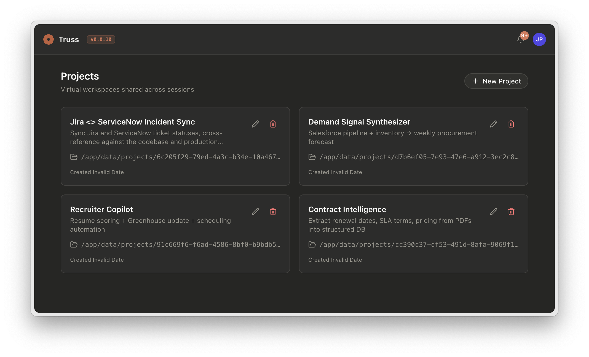
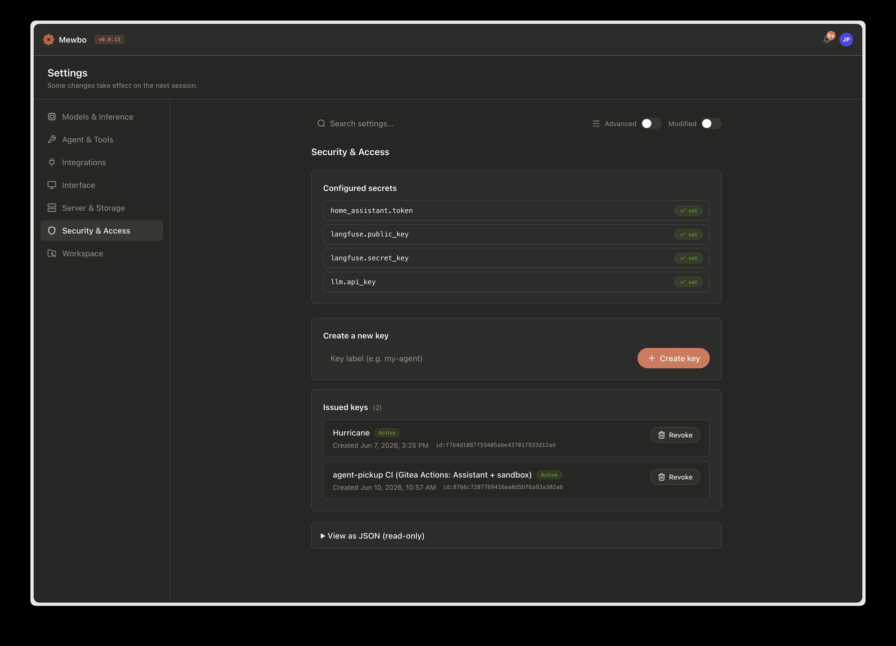

The REST API is the programmable surface for Mewbo. You send it queries, start and resume sessions, and poll events for progress. The web console is a browser-based client that sits on top of that API. It is built for asynchronous delegation: you submit a task, the console streams the event timeline, and you follow execution traces, tool outputs, and sub-agent activity as the session runs. The API handles orchestration. The console gives you session management, an event timeline, and rich visualization of tool output.
See Get Started for installation and Docker Compose for container deployment.
Run the REST API
uv run mewbo-api
API notes:
- Protected routes require
X-API-Keymatchingapi.master_tokeninconfigs/app.json. - Session runtime endpoints support async runs and event polling.
X-Mewbo-Capabilitiesis an optional request header advertising what the client can render. See Client capability negotiation below.X-Mewbo-Surfaceis an optional request header naming the client surface (for exampleconsoleormcp). The API stamps it onto the session and its traces, so observability filters can slice by surface. The header is on the CORS allow-list, so browser clients can send it cross-origin. Omitting it defaults toapi.
The complete endpoint catalog lives in the REST API Reference. It is generated from the live server, so every parameter, response shape, and request sample there is current with the code. The shape of the surface, conceptually:
- Sessions are the core resource. Create, list, fork, query, steer, interrupt, archive, share, and export them. Follow progress through event polling or the SSE stream. Event kinds include
widget_readyfor capability-gated widget output; see Widgets in the timeline. - Projects, branches, and worktrees decide where a session runs. See Multi-project support and Branches & Worktrees.
- Configuration and keys: read and patch the app config, manage revocable API keys. See Configuration API below.
- Plugins: list installed plugins, browse marketplaces, install and uninstall.
- Webhooks: POST/api/webhooks/<platform> receives inbound chat-platform messages (HMAC auth, not API key). See Nextcloud Talk and Email for setup. Slash commands:
/help,/usage,/new,/switch-project. - Web IDE: launch, stop, and extend a per-session code-server container.
Run the Console
cd apps/mewbo_console
npm install
npm run dev
Console notes:
- Configure VITE_API_BASE_URL to point to the API server (default: http://127.0.0.1:5124).
- Set VITE_API_KEY to match api.master_token in configs/app.json.
- Set VITE_API_MODE to live for direct API access or auto (default) for fallback to mock data.
- During development, the Vite dev server proxies /api/ requests to the API backend.
Client capability negotiation
Clients advertise the UI primitives they can render by sending the X-Mewbo-Capabilities request header. The value is a comma-separated list of capability ids (for example stlite, or stlite,foo). The header travels on every request that creates or drives a session.
| Layer | Behaviour |
|---|---|
| Client | Sets X-Mewbo-Capabilities per request. The console sets stlite automatically; other clients opt in explicitly. |
| API | Writes the advertised list onto the session's context event the first time the session is seen. |
| Orchestrator | Reads capabilities from the context event once per session and passes them to the ToolUseLoop. |
ToolUseLoop |
Filters the agent catalog, skill catalog, and session-tool schema so only entries whose requires-capabilities are satisfied are visible to the LLM. |
No header means no capability-gated surface
A REST caller that omits X-Mewbo-Capabilities: stlite will not see the st-widget-builder agent_type, will not see the /st-widget-builder skill, and will not have the submit_widget tool bound on its sessions. The same applies to any third-party plugin that declares requires-capabilities.
See Widgets for the reference use case and Plugins & Marketplace → Capability gating for the full contract.
Widgets in the timeline
Sessions that advertise stlite get the bundled widget surface: the st-widget-builder agent type, the /st-widget-builder skill, and the submit_widget session tool. When the sub-agent completes, a widget_ready event lands in the session event stream alongside the usual tool results.
| Field | Description |
|---|---|
widget_id |
Stable identifier for the widget, typically widget_<unix_ts>. |
app_py |
Full text of the widget's app.py. |
data_json |
Widget state as a JSON object. |
requirements |
Optional list of extra Python packages the widget imports. |
summary |
Optional one-line description. |
The console timeline builder attaches the payload to the turn that contained the submit_widget call and mounts it inline as an stlite panel running in a Web Worker; theme sync to the console's dark/light mode is automatic. The REST API returns the same event in the GET/api/sessions/{id}/events poll response. Programmatic clients can either render it themselves with stlite or ignore it.
See Widgets for the full picture, including the lint loop and the component library.
Docker Compose deployment
For container-based deployment, including the full environment variable reference and production reverse proxy setup, see Docker Compose.
Session management
Fork from message / edit and regenerate
Any message in a session can be used as a branch point. In the console, hover a message and click "Fork from here" to create a new session with history up to that point. The API equivalent:
POST /api/sessions
{
"fork_from": "<session_id>",
"fork_at_ts": <timestamp>
}
Per-message model override
In the console, each message input has a model selector. Submit with a different model to use it for that turn only. The session's default model is unchanged.
Per-run fallback models
Each query can carry its own fallback ladder. Pass fallback_models in the request context:
POST /api/sessions/{id}/query
{
"query": "...",
"context": {
"model": "openai/gpt-5.5",
"fallback_models": ["anthropic/claude-sonnet-4-6", "openai/gpt-5.4-nano"]
}
}
When the primary model keeps failing, the run escalates down the list in order. Omit the field, or send an empty list, to defer to the configured fallback policy. In the console, the composer's Fallback tab controls the same list.
Realtime endpoints
Two low-latency paths are available. POST/v1/structured with "mode": "synthesis" returns a grounded, schema-constrained answer in a single round-trip. POST/v1/draft/stream streams draft tokens over SSE. Both are documented with the structured-output family in Structured Outputs.
Sharing and export
POST /api/sessions/{id}/share → returns { token }
GET /api/share/{token} → fetch shared session data (read-only)
POST /api/sessions/{id}/export → download full session payload
Shared sessions are read-only and accessible without authentication.
Attachments
Upload files to inject their content into the LLM context:
POST /api/sessions/{id}/attachments (multipart/form-data)
Uploaded text files are read from disk and injected into the system prompt for that session.
Inline @-references
For lightweight, high-frequency context you don't need to upload a file: write an
@-reference inline in the query body and the API expands it into a bounded
context block at submit time, before the model runs — no read_file /
web_url_read round-trip. Resolution is relative to the session's project
directory (cwd).
| Form | Expands to |
|---|---|
@path/to/file |
the file's contents (binary docs — PDF/Office — are rendered to Markdown) |
@path/to/dir/ |
a shallow listing of that directory (trailing slash optional) |
@diff / @git-diff |
git diff HEAD for the session's project, when it is a git repo |
@https://example.com/page |
the fetched page, rendered to Markdown |
POST /api/sessions/{id}/query
{ "query": "explain @src/app.py and compare with @docs/design.md" }
Scoping. @file and @dir/ references resolve only to files in the
project's git index (tracked plus new files that are not .gitignored) or to
files attached to the session — so .gitignored secrets and build artifacts are
never pulled in. A non-git project directory falls back to files under that
directory. List the referenceable files with GET/api/files?session=<id> (or
?project=<name>), which backs the composer's @ autocomplete.
Guardrails keep the prompt bounded: each block is size-capped and truncated
with a marker (never rejected) on overflow, identical references are
deduplicated, and there is no recursive expansion. Anything that doesn't
resolve — a missing or out-of-scope path, a non-repo @diff, an unreachable
URL, or an email address like you@example.com — is left in the message
verbatim, so a stray @ is never destructive. The same expansion applies to the
synchronous POST/api/query endpoint, and to the CLI (which expands @<ref>
in-process against its working directory). In the web console and the
CLI, typing @ opens a file picker and typing / suggests commands and
skills as you type.
Mid-session steering
While a session is running, you can send messages or interrupt:
POST /api/sessions/{id}/message { "text": "..." } → queued as HumanMessage
POST /api/sessions/{id}/interrupt → signals the current step to pause
In the console, the InputBar shows a steering mode UI while a run is in progress.
Multi-project support
The console supports multiple projects that appear as virtual workspaces shared across sessions. Each project has its own working directory, its own .mcp.json, and its own .claude/skills/ directory, so tools and skills scope cleanly to the project you are in.

Create and switch projects from the Projects page or the project selector in the ConfigMenu. In the REST API, projects are identified by the working directory path you pass in the session context.
A session can also be anchored to a specific branch of a project, or run inside an isolated git worktree so parallel sessions never collide. See Branches & Worktrees.
Configuration API and the Settings screen
The app configuration is readable and writable over REST:
GET /api/config → { "config": {...}, "secrets": {...} }
PATCH /api/config → apply a partial update, validate, persist
GET /api/config/schema → JSON Schema for the configuration
Reads are redacted. Secret values (API keys, tokens) are never returned. Instead, the secrets map reports whether each secret is set, keyed by dotted path, for example "llm.api_key": true. Secrets stay writable through PATCH. Protected fields can be neither read nor written; a PATCH touching one returns 403. An update that fails validation returns 422 with the errors and persists nothing.
The console's Settings screen sits directly on these endpoints. It is schema-driven: the backend's config schema defines the sections, grouping, and field types, so a new config option surfaces in the UI without frontend changes. Secret fields render as write-only inputs that show set or unset state, never the value. Each section saves independently.
The Security & Access section is where you manage credentials and mint keys: configured secrets show only their set/unset state, and API Keys are created, labelled, and revoked here. Each issued key authenticates both the REST API and the MCP server.

Notifications
GET /api/notifications → list pending notifications
POST /api/notifications/dismiss → dismiss by ID
POST /api/notifications/clear → clear all
Notifications appear in the console bell icon for events like session errors.